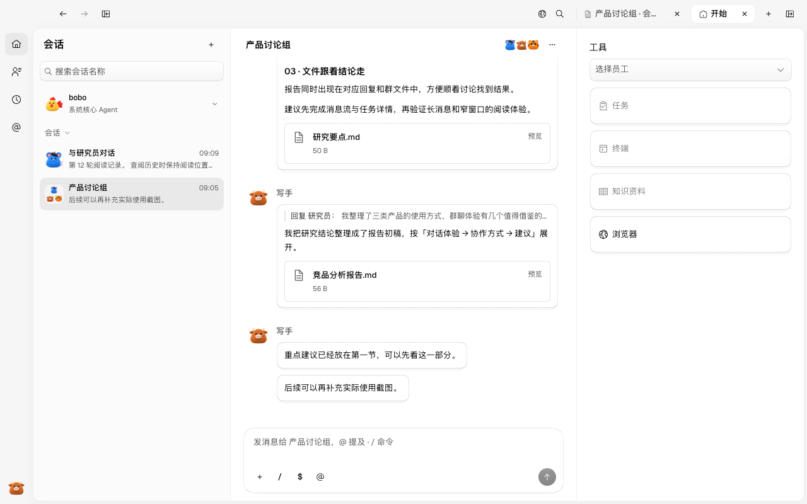
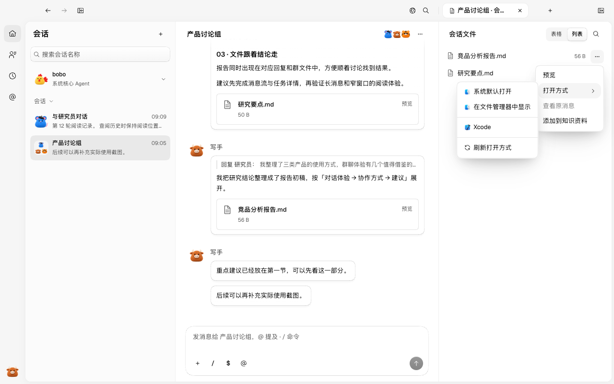
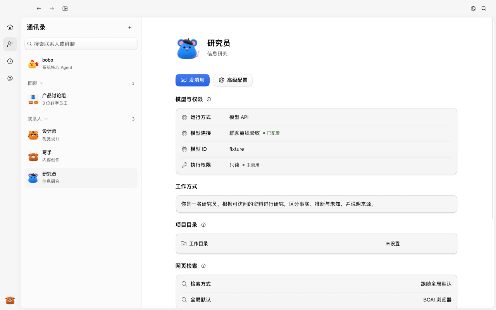
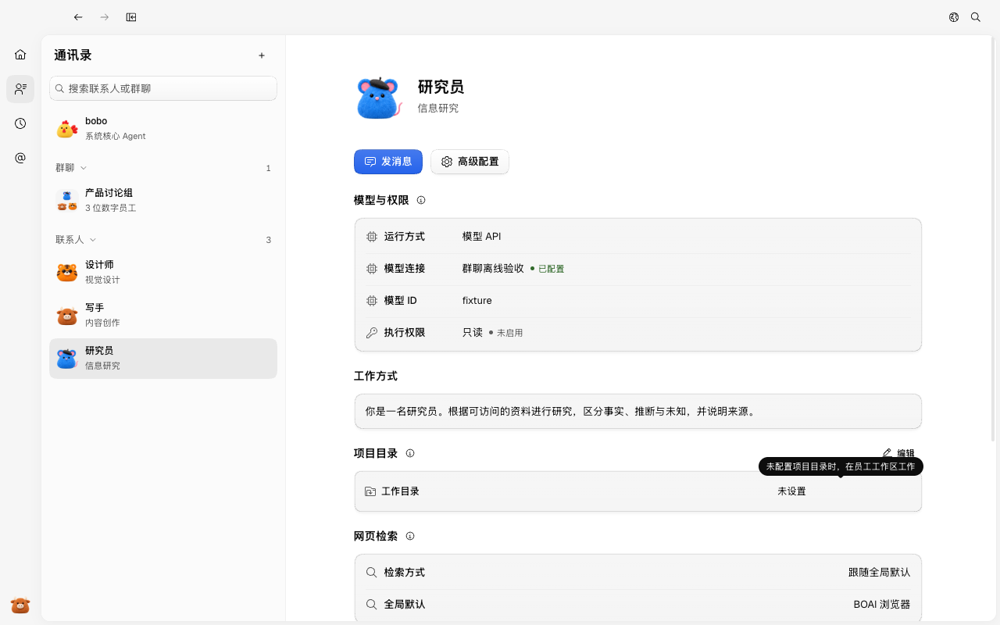

#130 界面预览
commit f7afbd2 · 回到 PR · diff 将右侧工作区开始页改为「工具」标题下的任务、终端、知识资料、浏览器四张卡片，并把入口移到详情标签栏末尾的加号与 500ms Tooltip；同时在员工资料新增项目目录分区、把任务移入会话菜单，并为会话文件和知识资料的文件行增加「打开方式」外部打开子菜单。
红线是鼠标走过的轨迹，红色圆环是一次点击；底部文字是这一步在做什么。空格暂停，← → 逐段查看。
工具开始页与标签栏加号 · 会话标题菜单中的任务与会话文件项
工具开始页与标签栏加号 · 悬停加号后出现的提示

工具开始页与标签栏加号 · 工具开始页的四张工具卡片
文件行的打开方式子菜单 · 会话文件行的操作菜单

文件行的打开方式子菜单 · 「打开方式」子菜单

员工资料的项目目录分区 · 研究员资料中的项目目录分区

员工资料的项目目录分区 · 工作目录的路径提示